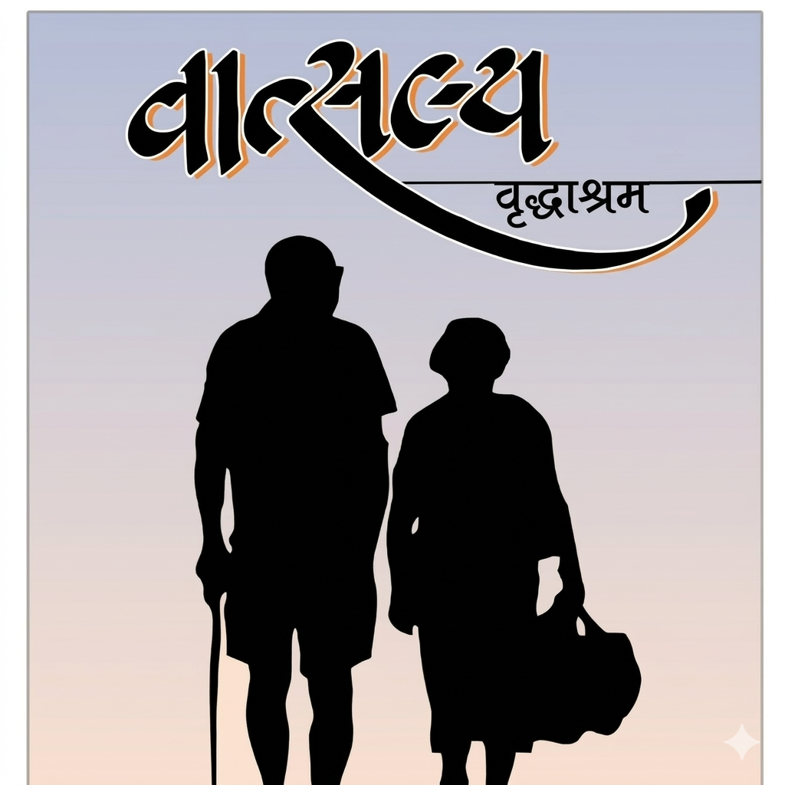
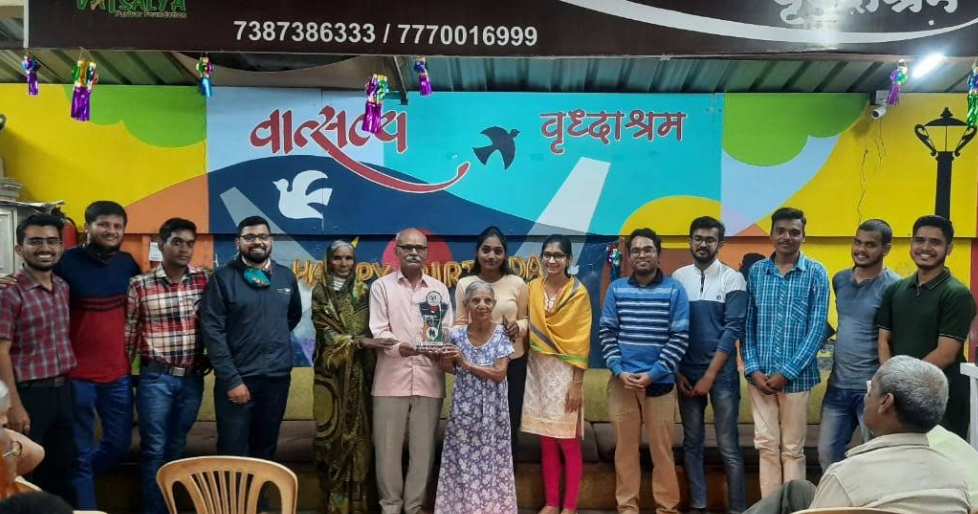

At Vrudhashram, we believe every elder deserves love, care, and a peaceful life filled with dignity.
Our home provides a safe and friendly environment where elders can live happily, make friends, and enjoy their daily life without stress or loneliness.
From One Man’s Pain to Many People’s Peace ❤️
Mr. Satish Sonar couldn’t bear to see elders living in pain and silence. He turned his sorrow into strength and built a home — not made of walls, but of care.
From two rooms to two full centers, his dream became a movement. Today, Vatsalya Parivar Foundation is home to over 100 elders, each with a story, and now, a family.
A humble home built with hope. The foundation welcomes its first residents—abandoned elders seeking love and belonging.
Medical support, emotional bonding, and spiritual well-being become part of everyday life.
Birthdays, festivals, and joyful moments create a true family environment filled with happiness.
Outreach programs help identify and support neglected elders across rural areas, proving care has no boundaries.
To provide safe shelter, emotional support, and healthcare to elders, ensuring they live with dignity and happiness.
To create a society where no elderly person feels alone, neglected, or unsupported.
Daily nutritious meals for better health.
Regular checkups and emergency support.
Care, love, and companionship always.
Events, games, and joyful moments.
“When I came here, I felt alone and lost. But today, I have friends, support, and happiness again. This place gave me a new life.”
OUR IMPACT IN NUMBERS
At Vatsalya Old Age Home, we believe every elder has the right to live with dignity, purpose, and care. Our mission is not only to provide shelter but to offer a nurturing environment that heals emotional wounds and restores a sense of belonging.
Years of care
Residents supported
Active volunteers
